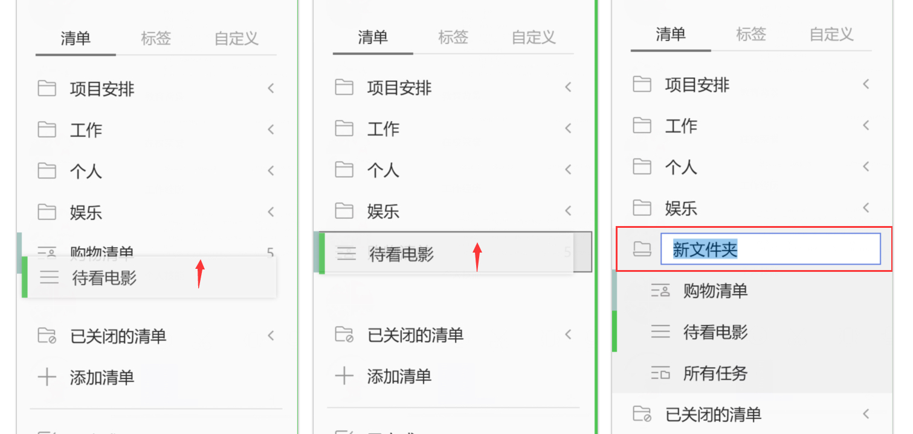

文件夹
随着清单列表越来越长，需要经常拉动左侧边栏以查看具体清单，这个时候可以使用文件夹来整理你的清单列表。
创建文件夹
长按住一个清单拖动到另一个清单至重叠，松开后可以创建一个新的清单文件夹，输入文件夹名字即可。或者通过清单添加或编辑弹窗中的文件夹来创建新的文件夹。 注：可以直接拖动清单到文件夹，也可以拖动清单移出文件夹。

重命名
在侧边栏中，单击文件名右侧的「···」，选择重命名，修改文件夹的名字。
解散文件夹
在侧边栏中，单击文件名右侧的「···」，选择解散文件夹，文件夹中的清单不会被删除，将独立出来显示在侧边栏。
文件夹总览
添加和编辑文件夹时，可以选择是否启用文件夹总览。启用后，当文件夹中的清单达到两个及以上时，文件夹下会出现【所有任务】清单。在这个清单里可以查看文件夹内所有任务，默认按清单排序，你也可以更改它的排序方式，按到期时间、标题或优先级排序。 注：文件夹总览默认开启。关闭文件夹总览后，即使文件夹中的清单达到两个，也不会显示【所有任务】清单。